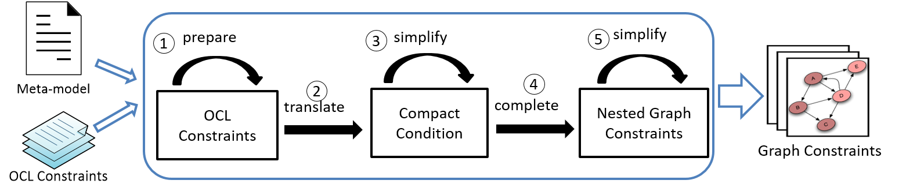
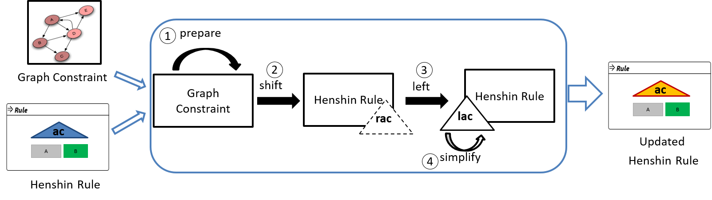
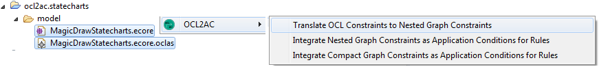
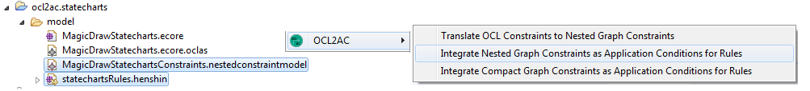
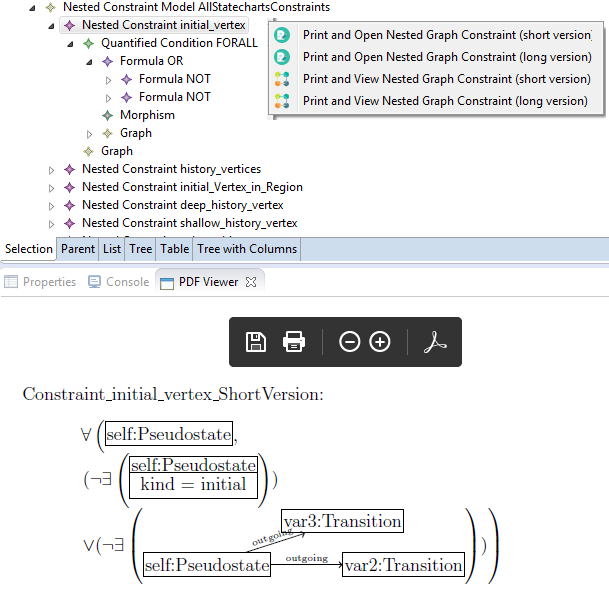

<
News: a new release including the optimizer.
OCL2AC Tool
OCL2AC is a tool based on the Eclipse Modeling
Framework (EMF) and consists of two main components:
(1) OCL2GC translates OCL constraints into a set of semantically equivalent (nested) graph constraints.
(2) GC2AC integrates graph constraints as (guaranteeing) application conditions into transformation rules.
Each component can be used independently as an Eclipse-based tool.
(1) OCL2GC translates OCL constraints into a set of semantically equivalent (nested) graph constraints.
(2) GC2AC integrates graph constraints as (guaranteeing) application conditions into transformation rules.
Each component can be used independently as an Eclipse-based tool.
- 
Fig. OCL2GC Translator
- 
Fig. GC2AC Integrator
Optimizer (NEW)
The optimizer is a new component added to the tool OCL2AC. It constructs an optimized validity-preserving application condition from a given a constraint and a rule.
The optimizer checks if the constraint is required to be integrated into the rule, and simplifies the guaranteeing application condition by removing unnecessary checks during the construction process. For more information, please take a look at the paper [2] and its web page.
Installation
- 1. Install the Eclipse Modeling Tool, e.g., Eclipse Neon: https://www.eclipse.org/downloads/packages/release/Neon/3
- 2. Install OCL in Eclipse: You can use the update manager in Eclipse to install OCL: E.g., in Eclipse Neon you use the link http://download.eclipse.org/releases/neon/ to install new plugins such as OCL SDK.
- 3. Install Henshin: You can use the following update site to install Henshin using the update manager in Eclipse: http://download.eclipse.org/modeling/emft/henshin/updates/release
- 4. Install OCL2AC: You can use the following update site to
install our tool using the update manager in Eclipse:
Current release: https://ocl2ac.github.io/home/current
Getting Started
two examples can be downloaded and imported to your workspace:Statechart and Petrinet.
OCL2GC
To use OCL2GC, two files are needed as inputs: an ecore file (.ecore) and an OCL file (.ecore.oclas):
- (1) To get the OCL file (.ecore.oclas): Open the meta-model file (e.g., petrinet.ecore) using Open with->OCLinEcore Editor. Then, right mouse-click on the opened OCLinEcore and choose OCL->Save->Save Abstract Syntax.
- (2) Select both files (.ecore) and (ecore.oclas), right mouse-click on them. Then choose OCL2AC-> Translate OCL Constraints to Nested Graph Constraints.
- The output is a model file (.nestedconstraintmodel) which contains all the nested graph constraints being translated from OCL constraints.

GC2AC
To use GC2AC, two files are needed as inputs: a Henshin file (.henshin), and a nestedconstraintmodel file (.nestedconstraintmodel) or a compactconditionmodel file (.compactconditionmodel):
- (1) Select two files: the henshin file (.henshin) and the graph constraint file (.nestedconstraintmodel or .compactconditionmodel) and right mouse-click on them. (2) Choose OCL2AC->Integrate Nested Graph Constraints as Application Conditions into Rules if the file (.nestedconstraintmodel) is selected or OCL2AC->Integrate Compact Conditions as Application Conditions into Rules if the file (.compactconditionmodel) is selected. This opens the integrator wizard. The integrator wizard displays the graph constraints from the selected graph constraint file and the rules from the selected Henshin file. (3) Select one constraint and one rule from the wizard and press integrate.
- The output is a new Henshin rule being contained in the Henshin file (.henshin).


Graphical Formal View
- To generate and view the latex file which represents the
graphical formal representation of a selected nested graph constraint or the
left application condition of a selected Henshin rule:
- For showing a nested graph constraint: Open the file (.nestedconstraintmodel) using the tree-based editor in Eclipse. Select a concrete constraint (the container node of it), right-mouse click on it to choose OCL2AC_NestedGraphConstraints.
- For showing the application condition of a Henshin Rule: Open the Hesnhin file using the tree-based editor. Select a rule and right-mouse click on it to choose OCL2AC_Henshin.

Publications
[1] Nebras Nassar, Jens Kosiol, Thorsten Arendt, Gabriele Taentzer: OCL2AC: Automatic Translation of OCL Constraints to Graph Constraints and Application Conditions for Transformation Rules : The 11th International Conference on Graph Transformation (ICGT 2018), Springer. [PDF]
[2] Nebras Nassar, Jens Kosiol, Thorsten Arendt, Gabriele Taentzer: Constructing Optimized Validity-Preserving Application Conditions for Graph Transformation Rules . In: The International Conference on Graph Transformation (ICGT 2019), Springer. [PDF] (long version)
[2] Nebras Nassar, Jens Kosiol, Thorsten Arendt, Gabriele Taentzer: Constructing Optimized Validity-Preserving Application Conditions for Graph Transformation Rules . In: The International Conference on Graph Transformation (ICGT 2019), Springer. [PDF] (long version)